COVID19 á Íslandi
Spálíkan fyrir fjölda tilfella og álag á heilbrigðisþjónustu
2020-03-19
Aðferð
Forspá uppsafnaðra tilfella

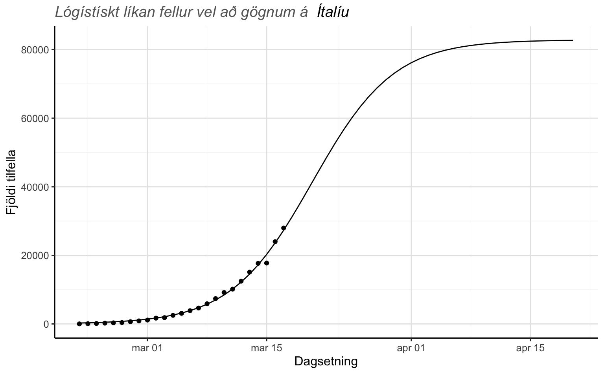

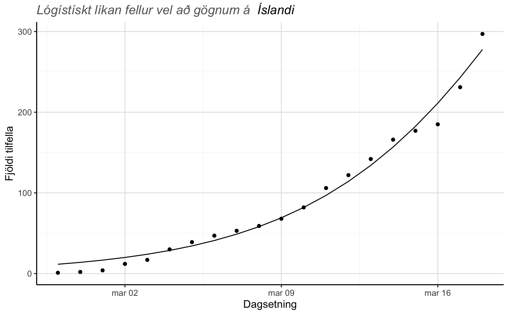
Virk smit
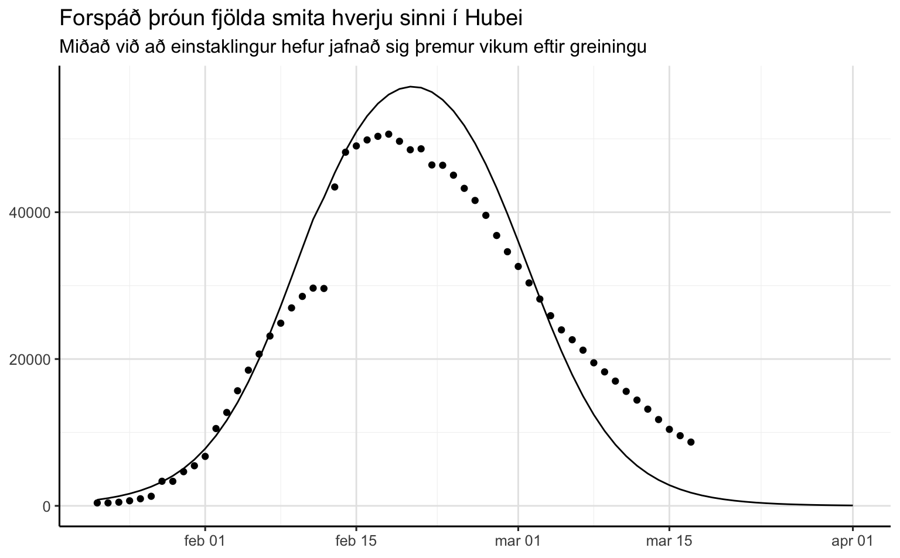
Hermun
Gagnataflan að neðan er sett saman með
p_tilfelli: aldursdreifing smita skv covid.is. Bæti við einu tilfelli í alla aldurshópa til að leyfa smit í 80+ og jafna aðeins út drefinguna.
p_spitali og p_alvarlegt: table 1 héðan
| Aldur | Tilfelli á Íslandi | % Tilfella | % Spítali | % Alvaregt |
|---|---|---|---|---|
| [0 - 9] | 3 | 0.88% | 0.10% | 5% |
| [10 - 19] | 21 | 6.19% | 0.30% | 5% |
| [20 - 29] | 46 | 13.57% | 1.20% | 5% |
| [30 - 39] | 56 | 16.52% | 3.20% | 5% |
| [40 - 49] | 85 | 25.07% | 4.90% | 6% |
| [50 - 59] | 71 | 20.94% | 10.20% | 12% |
| [60 - 69] | 48 | 14.16% | 16.60% | 27% |
| [70 - 79] | 8 | 2.36% | 24.30% | 43% |
| 80+ | 1 | 0.29% | 27.30% | 71% |
| Note: | ||||
| Einu tilviki bætt við alla aldurshópa til að jafna út dreifingu og leyfa smit í 80+ |
Skref í hermun:
- Met logistic growth líkan og fæ forspá úr því, mean og 97.5% predictive upper limit
- Nota fyrirliggjandi aldursdreifingu smita og forspár til að herma framtíðartilfelli með multinomial (bætti einu tilviki við alla aldurshópa til að fá ekki 0 í 80+)
- Nota table 1 héðan til að herma sjúkahúslegur út frá skiptingu tilfella
- Nota sömu töflu til að spá fyrir um bráð tilfelli meðal ofangreinda sjúkrahúsinnlagna
- Sæki miðgildi og valið quantile úr öllum ofangreindum hermunum og skila í gagnatöflu.
Skipta í aldurshópa
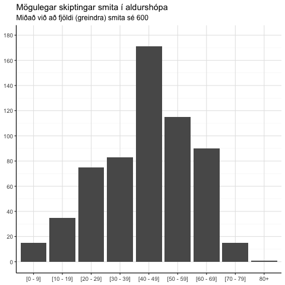
Herma fjölda innlagna
| Aldur | Smit |
|---|---|
| [0 - 9] | 4 |
| [10 - 19] | 40 |
| [20 - 29] | 66 |
| [30 - 39] | 96 |
| [40 - 49] | 155 |
| [50 - 59] | 138 |
| [60 - 69] | 86 |
| [70 - 79] | 13 |
| 80+ | 2 |
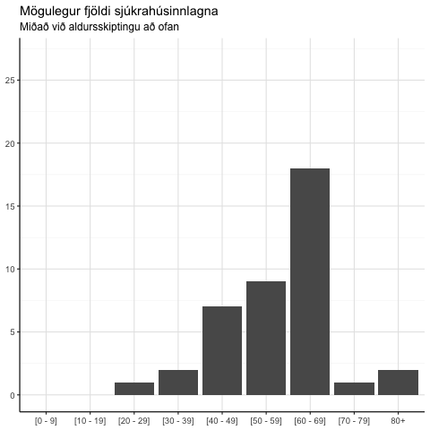
Niðurstöður
Virkt
Greind smit
Samtals
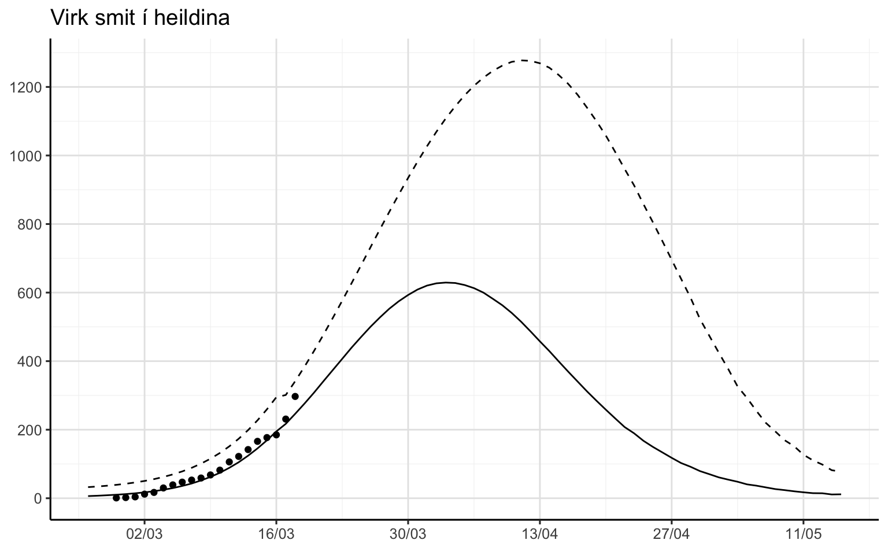
Aldursskipt

Sjúkrahúslegur
Samtals
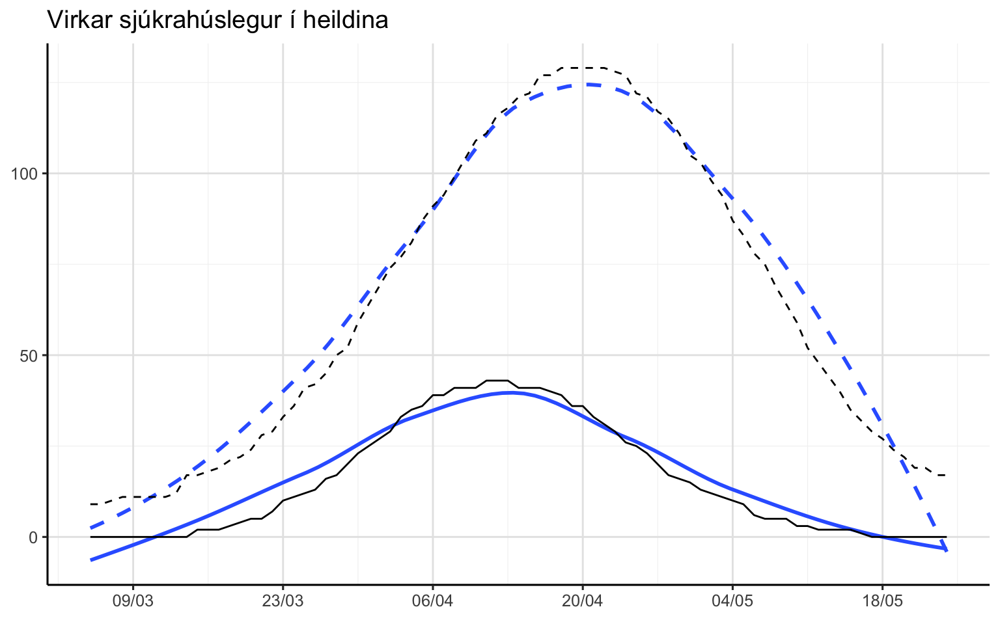
Aldursskipt

Alvarleg tilfelli á sjúkrahúsi
Samtals

Aldursskipt

Uppsafnað
Greind smit
Samtals

Aldursskipt
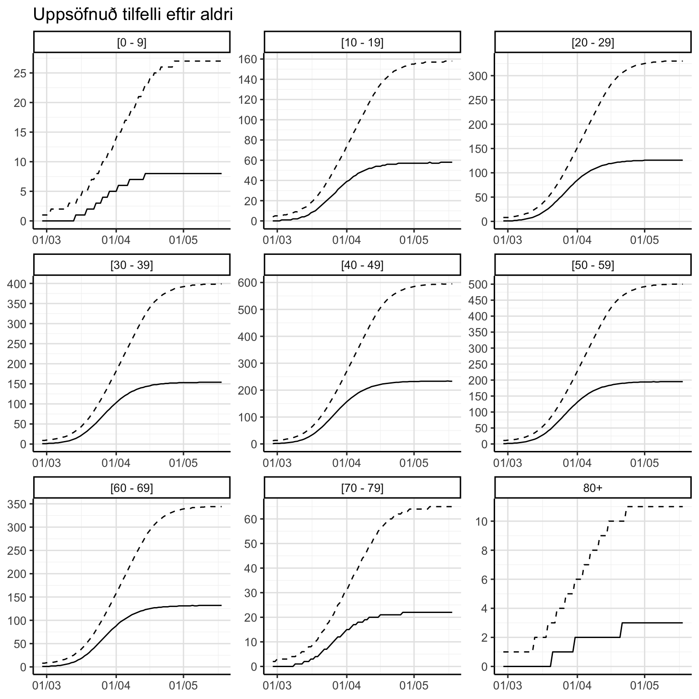
Sjúkrahúslegur
Samtals
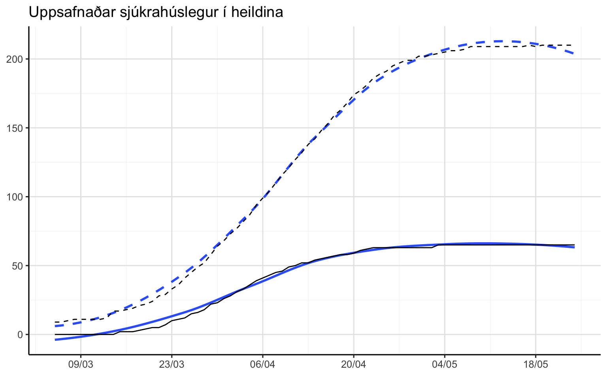
Aldursskipt
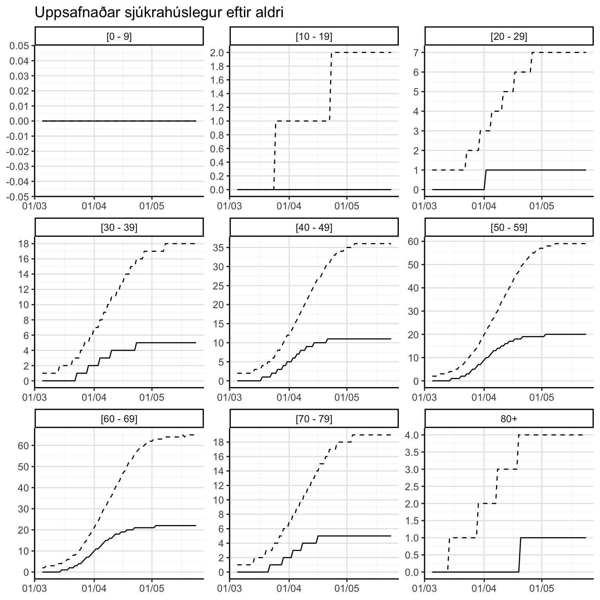
Alvarleg tilfelli á sjúkrahúsi
Samtals

Aldursskipt
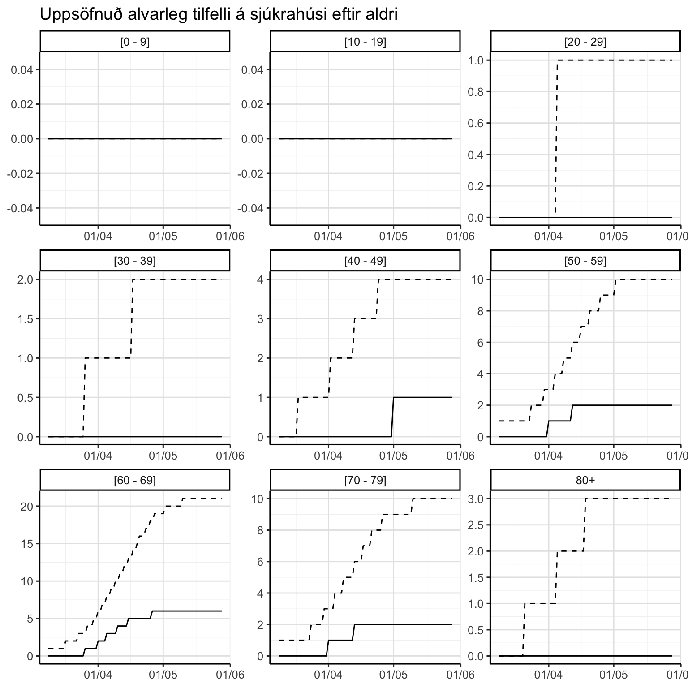